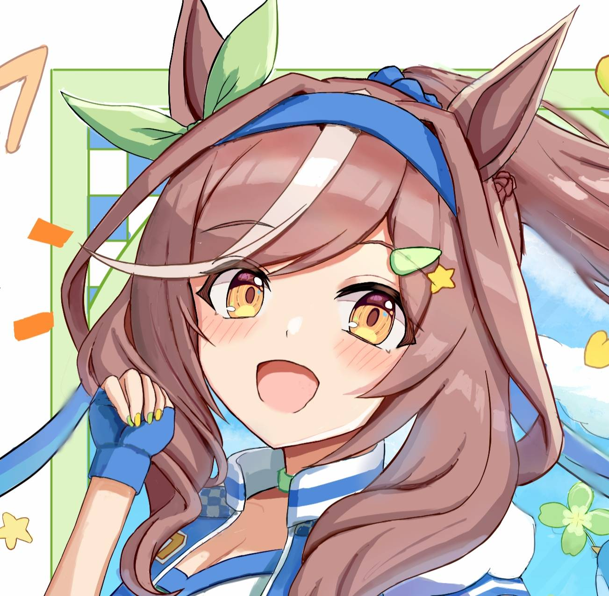

YURIKO HIORSHI
Artist, Gamer, Beginner Music Composer
He/His, Straight Ally
Birthday: December 5, 2006
ABOUT ME
Hello there, My name is Yuriko, you can call me Yuri or anything.
I'm just a quiet, mysterious, and introverted person, but I'm mostly chill too. This is my first time to create my own bio website and for my school project but I'll used my own personal website here for online community.
If you're close, I'm a lewd person (yes for real), even tho I'm weird, I mostly serious whenever I'm asking or answering your questions. I play gacha games everyday even roblox and steam. I also draw some anime characters and OCs (Original Characters) and logo design
for my project stuff. If you don't want me to chat because I'm lewd, then don't do it.
I also do build stuff on roblox studio but I'm too lazy to build something but I'll try. And lastly I do is worldbuilding, I do make fictional world and countries and my project. Also two worldbuilding projects aren't related together, they are completely separated.
Lastly, I also make music which I kinda ass and I'm still a beginner, but I do remakes or remixes.
LGBTQ are cool and I strongly support to them. I don't mind people if they are doing girlkissing and boykissing.
I also have a disablity, Communication and Language, I mostly stuttering in front of the class and I stop talking for a second but I'll do my best.
And yes, I have feelings and emotions when I have disability so don't make me fun of me.
 Steam
Steam
 Twitter / X
Twitter / X
Twitter / X (Art Account)
 Roblox
Roblox
 Discord (DM me for questions or just add me idc)
Discord (DM me for questions or just add me idc)
 GitHub
GitHub
 BlueSky
BlueSky
 Pronouns
Pronouns
FAVORITE PEOPLE
Laura, Jhh, Hime, Niki, Miku, Melanie, Sorest, Duke, Latte, Tristan, Phoebe, Myles, and Scotch
CREDITS
Special big thanks and credit to my friend, Laura for using her code for my website. 💕